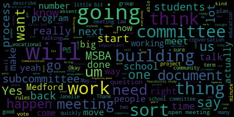
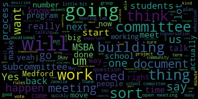

total time: 43.98 minutes
total words: 7156

{kind=link}
total time: 0.62 minutes
total words: 38

total time: 1.7 minutes
total words: 242
{kind=link}
total time: 1.05 minutes
total words: 234

total time: 0.56 minutes
total words: 100

[Graham]: The drinks are over there. One minute. There's a little bit of overlap, but I can I can hear usually one person at a time.
[Austin]: Perfect.
[Ruseau]: The gang's all here. And I think Chad is the only other person. We'll be back.
[Galusi]: We're each other like an hour.
[Graham]: Suzanne, do you know Luke? I don't think I do. I'd like to see wheels.
[Parkinson]: My, I don't think I've seen one. Okay. Good evening. We're setting up today. Our Zoom will have a much more functional Zoom room in the future. We're just waiting for our vendor to come. The microphone is in the center there. It's completely wireless. So we need to move it as necessary, but it also serves as a speaker. So if I have to unplug some stuff, I will do that. If there's too much noise, just let me know.
[Graham]: Do we have people in the waiting room on Zoom?
[Parkinson]: The waiting room is open, so people are free to come in at any time. And if we see anybody, we'll just send you a code.
[Graham]: OK, great. Thank you. Welcome, everybody. We're here. We made it. That's actually really exciting. Thank you all for coming. Just by way of some plans for tonight, we're going to leave at 8. We're going to leave sooner than 8. The first thing, I'm going to shift the agenda around a little bit because Janelle from KP Law is here to do some open meeting law training. So we're going to skip introductions for the moment. so that Janelle can do open meeting while training because she has a commitment for the second half of this meeting. So I wanted to make sure there's enough time for her to get that in. But before we do that, I'm just gonna do a quick roll call so that we, for the record, know who's here. Jenny Graham here. Mayor Lungo-Koehn.
[Galusi]: Here.
[Graham]: Dr. Edwarda Benson. Here. Dr. Galusi.
[Galusi]: Here.
[Graham]: Dr. Cushing.
[Galusi]: Here.
[Graham]: Moderator Cabral. Here. Lady Brown. Here. Marissa Desmond, Maria Dorsey, Brian Hilliard, he is absent. Tracy Keene, Emily Lazzaro is absent. She has a council meeting tonight. Nicole Morell is absent. She had a prior conflict. Aaron Lopate, Luke Preissner, Larry Brown, Bob Dickinson, he is not here this evening. Fiona Maxwell, Joan Bowen, Thomas Dalton, Chad Fallon is incoming, I believe. Lori Hodgkin, John McLaughlin, Paul Rousseau, and Philip Santos is not present tonight. He had a conference as well. So we have a quorum. You're gonna learn why that's important in just a few minutes. But I'm gonna turn it over to Janelle in just a second. But I think I'll start by saying all of our meetings are subject to the open meeting law. And with four years of experience in the open meeting lot, it's a very clunky way to get work done. So I'm just going to say that that's my personal experience. It's there for a reason. It's absolutely necessary, but it will require all of you to think carefully about not only what you're saying and doing in the meetings, but more importantly, how you're behaving outside of our meetings because you can sort of inadvertently find yourself in conflict with the open meeting law. MSB requires that we hold all of our meetings in accordance with the open meeting law, so we thought it was important for everybody to have some sort of grounding in all of that. Um the elected officials in the room obviously are familiar with the open meeting law and can provide guidance to anybody who has questions. I've just signed them up for that. Um I would say to the educators in the room like you generally interact with the school committee all the time and you are generally not subject to the open meeting law but in this room and on this topic you are. So it's um just sort of a tuning of your set of responsibilities in this way. So I'm going to turn it over to Janelle. Janelle, if you could kindly let us know whether you want questions along the way or you want us to hold our questions until you're done.
[Austin]: Sure. Thank you so much. Can everyone hear me okay? Yes. Thank you so much for having me this evening. Happy to present on this very important topic of the open meeting law. I will dive into the public records law a little bit to the extent there's a little bit of overlap. I always think it's a good idea to cover these topics. Certainly I agree in terms of open meeting law compliance. I represent the city of Medford, other communities across the state, and we are seeing a significant uptick in open meeting law compliance. So certainly a good opportunity to provide best practices, talk a little bit in terms of you know, what your role is in terms of open meeting law compliance, and I understand that some members may be more familiar than others, so I'll try to start with best practices, and I think that's always a good idea. If there are certainly any questions after the training, or along the way, I think we can feel free to interject. I'm an informal person, as many of you know, happy to have this be a conversation. If someone feels more comfortable speaking to me after the training, I'm certainly happy to make myself available as well. And the mayor has my contact information, happy to provide that. I would also start by saying certification is really important. So for any member that hasn't already completed their open meeting law certification, I recommend that be done as soon as possible. The new Attorney General has put forth a new updated open meeting law guide. last year. That's available on the Division of Open Government's website. I'm happy to circulate the link after this, but in my opinion, if any members are due for their open meeting law certification or for any new members, it's a good idea and certainly required under the open meeting law that that be conducted. We are going to cover best practices tonight where this is a public meeting. I don't want to go into any specifics or anything that may invoke the open meeting law in a non-confidential way. Certainly if there are any questions, happy to follow up afterwards. I think I have the ability to share my screen. So I wanted to go through the slides that I have. And again, if anyone has any particular questions, happy to either interject. I won't take offense or go from there. Can everyone see the slides okay? Great. So we're here tonight to talk about the open meeting law. I'm gonna talk about best practices. I'm gonna go through the sort of fundamentals of the open meeting law. We certainly start with the premise that the open meeting law, public records and conflict of interest law throughout the country are really, you know, aimed at government transparency and to eliminate secrecy in terms of the work. that you all are doing. So we know that under the open meeting law, public bodies such as yourself that are subject to the open meeting law can generally only conduct public business through their public meetings, unless there's a specific exemption applies called an executive session, which would allow you to have a confidential meeting. And we'll cover that a little bit further in the training. But in essence, the open meeting law regulates the process by which public meetings can be held and conducted. And there are really several components to what the open meeting law requires. So one, what types of meetings are subject to the law? What rules need to be followed to hold a meeting sufficient to give members of the public notice? And what are the common violations and why? And I think this is always a good idea to cover, again, not to scare anyone or detract from any of the important work that you all are doing, but really just so we're all aware of what the Attorney General's Division of Open Government requires in terms of enforcement, and really to make sure everyone's on the same page with respect to the work and business of the committee. The open meeting law addresses four major issues, so I want to cover those in detail. And apologies if this is, you know, some information that many of the members may have, but I think it's always a good idea to do a refresher. We know that the open meeting law requires notice. Essentially, it requires that postings be conducted no more than 48 weekday hours prior to the meeting. We know that the notice has to be posted in a location accessible 24 hours a day, including the website, and the meeting has to be held in an accessible location under the ADA. If you are meeting virtually or in a hybrid format, we can talk about that. Certainly, information should be available so members of the public know how to log in at home, and any location that you're meeting in person should be accessible as well. We also know that the meeting notice or the agenda should have detailed subject matter items, so we'll talk a little bit about what that means. But it's a detailed list of topics that you will all review so that a member of the public can look at that meeting notice at home and say, yes, I'd like to attend the meeting because I know these topics are going to be covered, or no, I'm going to pass on this one and go to the next one. someone should be able to say, I understand what this meeting is about and I want to attend this meeting based on what's on the meeting notice. We're going to talk a little bit about the nature of the meeting. As I mentioned at the beginning, there's a presumption under the open meeting law because of government transparency issues for an open session. So the meetings conducted as we're meeting tonight in an open session so members of the public can see in real time what the public body is doing, the votes that are being conducted and the deliberation, and we'll talk about what that means, of the body's business and the public business being conducted. There are certain pretty narrowly tailored reasons for a closed or an executive session, and we'll talk about the procedures if you do end up meeting in executive session. Conduct of the meeting, this is a hot, hot topic in recent years, essentially, you know, what rules govern public comment? What are the free speech principles that may apply? Who gets to speak and when in remote and hybrid meetings? So we'll cover that. And then the fourth major component of the open meeting law is the meeting minutes themselves. Essentially the content of the meeting, detailed enough, similar to a meeting notice to allow someone that wasn't present to know what transpired or what took place at the meeting. The timing for drafting and approving those meeting minutes, essentially for an open meeting within three meetings or 30 days, whichever is later, is a standard that the Attorney General's Division of Open Government established. And we'll talk about the process to do that. Most of the public bodies that I work with usually have them approved at a, you know, an open meeting of the public body for any meeting minutes, but some decide to designate that task to the chair or to another individual. That's a policy decision, but we can talk about that if anyone has any questions on that as well. So we'll go through the overview essentially. 48 hours, I can't tell you how important that is prior to the date of the meeting. So certainly to be cognizant of legal holidays, vacation schedules, certainly as the summer months come up and there's various holidays in play, Memorial Day, Juneteenth, as well as July 4th, something to be aware of as you schedule meetings that it's 48 weekday hours, not including holidays or weekends. The meeting notice should list all the topics with specificity. And regardless of whether the meeting was posted correctly, We know that the open meeting law says that a meeting occurs whenever a quorum of your public body discusses matters within its jurisdiction. So we're gonna spend a lot of time on email practices and text message practices, because I certainly agree with the statement at the beginning of the meeting, that in essence, it's just as important what occurs outside of a public body's meeting under the open meeting law as to what occurs during a meeting. So we're gonna talk about pitfalls and some things to be careful of relative to your work. And essentially something that I see all the time and to be careful about is that we know that a quorum can be reached regardless of whether an email goes to the entire public body or whether it goes to several members and then it's forwarded to other members. So we're gonna talk about that. We call that serial communications and it's something with the, you know, explosion and all of us use technology all the time. It's something to be aware of, certainly, as you serve relative to the open meeting law to not get into a situation where there's deliberation over email or text message or other social media mechanisms. Subcommittees, I don't know if you intend to create any subcommittees, but certainly wanting to review that as well as we provide an overview. A subcommittee is also subject to the open meeting law. The intent to create a subcommittee essentially is not required, and the attorney general will look to determine whether or not the subcommittee is within government, empowered to act collectively in serving a public purpose. So generally speaking, unless there's an exception, and we'll talk about that, a subcommittee of your committee is essentially subject to the open meeting law. just as the entire compliment would be. You know, there are exceptions to that. If the mayor created a subcommittee to advise just herself or the superintendent did, where they are not individually subject to the open meeting law, a subcommittee created by them wouldn't be. It's a very fact specific analysis. So we just wanna be really careful with respect to the creation of subcommittees or working groups or task forces. to determine whether or not they are subject to the open meeting law. Some practical ways, I try to be practical as many of you know, to avoid violations of the open meeting law. One person reporting back to the public body doesn't create a subcommittee. And if multiple members are using, doing work on behalf of the public body, you would wanna post a meeting and comply with the open meeting law. Any questions so far? Okay, I'll continue on. Some tips to stay out of trouble. And this is all things that I've seen in advising municipalities since 2006 on open meeting law and public records issues. So it certainly comes from experience. If you are attending a meeting of another public body, school committees, city council, the city of Medford. Um another. I'm sure you're all very involved in the city of Medford and the work that the city does. You want to avoid creating the appearance, whether that be at another public bodies meeting or social event or community event. Um that you are discussing matters within this public bodies jurisdiction. Um I've handled open meeting law complaints or issues over the years where there's an or there was a community event and I think that they were talking about X, Y and Z. So certainly you wanna avoid the appearance that you are discussing municipal business. To the extent you need to meet jointly with the city council or the school committee or another public body, you can post a joint meeting to be held at the same time and place and then minutes would be prepared just as they would for any other meeting that you may have. If you're doing a site visit, certainly, best practice may be to send a representative to report back, and then that content is included in the next session's meeting minutes. You don't want to be in a position where there's a site visit at a particular location, for instance, that is not accessible. And then we're going to spend a lot of time tonight on email, but I can't reiterate this enough to try to avoid the use of email or text messages or social media. amongst a quorum of your public body. Locations, you're gonna wanna file your meeting notice with the city clerk and they're online as well. Some best practices with respect to using your or posting your meeting notice. I would recommend not using acronyms or abbreviations. Really someone that just moved to the city of Medford should be able to pick it up and say, I understand what's going on at this meeting. We all that do work with public bodies and public entities understand terms like MSBCA or MSBA, DEP, you know, DEF DESI, but certainly, you know, for the first time, you may want to spell it out just so everyone knows what is being discussed. The meeting notice should indicate the date and time of the posting. And if you do revise it, I don't know what the practice is going to be. You're going to want to include both the date that it was originally drafted and then the revised date as well. And that should be done 48 hours, 48 business hours in advance. Regularly occurring items do need some more detail than just these examples that I've used. What we know from recent determinations from the Division of Open Government is that more detail is better than less detail, so we don't really want to use categories such as new business, old business, or departmental report. We really want to specify, for instance, correspondence and list if there's any notable correspondence or you know, budget analysis and list any particular reports, for instance, that are going to be done. So I would recommend erring on the side of more, not less specificity, which should be helpful to alert members of the public about the exact topics that are going to be discussed. Any questions on any of this? Great. Some practical considerations, and this does come up obviously from time to time, scheduling matters or space limitations. Generally, a meeting may not be continued from one night to the next as a matter of course, unless that continuation is posted under the open meeting law. So if you couldn't meet tonight, would have to reschedule this meeting and repost it for the new date and time. And the notice requirement under the open meeting law doesn't substitute or supersede any other notice requirements if you have them under any other legal requirements. So always worth double checking to make sure you're covering any publication notice or anything else that may be required. Emergencies. I can't tell you how many questions I get regarding emergencies, particularly in the winter months with inclement weather. There are very limited instances when a public body can meet without that 48 hours notice that's required. Poor planning doesn't equal an emergency. We know from determinations of the Attorney General's office. So if there was just a mishap with respect to scheduling, and I certainly understand everyone's doing the best they can, and you certainly have a lot of schedules to figure out, with respect to the public body's business, but generally an emergency is limited to natural disasters, public health matters, and public safety issues. So something to be aware of. We can talk a little bit about if something's unanticipated, that's a little bit different, but hosting is really limited in the emergency context. If you do have an emergency you really need to meet, There's a specific reason why the 48 hours couldn't have been, it couldn't have been posted with the 48 hours. You do want to comply with the open meeting law to the extent you can, and really limit deliberations to just that emergency matter. You're gonna take meeting minutes of that emergency meeting, and then you'd wanna post a follow-up meeting where you basically ratify the action that was taken at the emergency. So let's hope for no emergencies. but just wanted to make sure everyone had that information as well. Conducting meetings. So we're gonna move a little bit from the notice piece of this and the agenda piece of the open meeting law to now how those meetings are conducted. These are topics that I often receive a lot of questions about. So I just wanted to make sure everyone had the best practices related to these particular topics of the open meeting law. We know that If the meeting is being recorded, similar to whether it be on Zoom or in person, that there should be a public statement or notification to the public through the technological means that the meeting minute is going to be recorded. And the basis of that is the Massachusetts wiretap statute. We can't secretly record anyone in Massachusetts. If an individual wants to record the meeting on their own, it's not otherwise recorded. So if someone shows up to an in-person meeting, it used to be when I started doing this, it would be the big, you know, the big recording device with a tripod that we had the old VCR tapes for. Now, of course, it's iPhones. The individual must inform the chair of their intent to do the recording. And then the chair would make the required announcement to the public body members as well as members of the public indicating that the meeting was going to be recorded. In my opinion, the chair can decide to reasonably regulate the recording placement. Obviously, as technology is smaller and smaller, this is less of an issue, but we don't want to block anyone's view, so to speak. And people can be in a position where they're not interrupting or there's no disorderly conduct in the meeting themselves. Any questions on recordings? Nope. Okay, thank you. Email. I would say, I'm going to try to do the math here. 70 to 80% of the open meeting law complaints that I deal with relate to the use of email, text messages, or other social media mechanisms. So I say that again, we all use technology, it's efficient, it's quick, It garners a quick response and certainly, I'm sure you all use it, you know, in your other lives, professional lives, personal lives. But really, the open meeting law does not encourage the use of email or other text messages by members of the public body to conduct their business. Email is explicitly addressed in the open meeting law, and it is often the reason I see for a violation to be determined by the Attorney General's office. And what the law requires is that a quorum, either collectively, so reply all situation, or, you know, a group of individuals or one individual forwards it to another who forwards another, can constitute an open meeting law violation. Members should really be cautious and a best practice would be not to use email to share ideas, beliefs, opinions, concerns, whether serially or in a single email regarding business. And you can't use another member to, you can't send an email to a non-public body member to then circulate out to the group as well. Some practical approaches, certainly beware to reply all on emails and really limit the use of email to scheduling purposes only and try to avoid using it to undertake business. We should always assume that emails could be forwarded to, you know, a local blogger, put on Facebook, sent to the newspaper. I've seen it before. So we really want to be very considerate of the use of email. And this is where there is the overlap with the public records law because even if you're volunteers, emails or text messages or social media posts that are made in your official capacity or in relation to your service on this committee really are subject to the public records law as well. And so if you use a Gmail account or a personal cell phone to send an email or a text message, and there is a public records request for that, that certainly would be subject to the public records law, most likely. So just something to be very cognizant of as you begin your service. Is there a question? No, I think we're good. Okay, great. Thank you. Texting and social media, texting and social media, similar, also subject to the open meeting law. Facebook, Snapchat, Twitter, Reddit, all of those are subject to the public records law and the open meeting law to the extent there is deliberation. If you are a user of social media, certainly in your individual capacity, you have free speech and first amendment considerations. So I'm not gonna speak directly to your individual rights, but certainly some practical approaches if you are posting on your service, you don't wanna direct comments to your other members, And if a matter directly involves issues pending, you might wanna consider not engaging. Certainly again, be thoughtful about the comments that are made and consider using separate accounts if you do run for something. Remember that applicants or any individual before you has due process rights. So certainly something to be cognizant of as well. The open meeting law, does not mandate, we're gonna talk a little bit about the authority of the chair in public comment, does not mandate that any particular person be allowed to speak at a meeting. So that's something we've seen a particular uptick in, both with respect to First Amendment auditors across the state, and also I'll talk a little bit about a case that came out last year that is really important. The open meeting law doesn't require that you even allow public participation or public comment, though I certainly understand that most public bodies do. The open meeting law indicates that the chair essentially has the sole discretion as to who may speak and for how long. So comments are directed through the chair, as you know. And while public comment isn't required under the open meeting law, allowing the public to speak during your meeting or restricting any speech, other than based on time, place, and manner restrictions, and we'll talk about what that means, does have serious constitutional implications. So certainly if you do allow public comment, all of the decisions as to who's going to speak or for how long should be content neutral. So not based on the particular message for a speaker or what that individual says, but just based on the time that's allotted. Some public bodies I work with say 15 minutes of public comment, everyone gets two or three minutes, people are allowed to speak once or twice depending on how busy the agenda is. And some have adopted public comment policies as well. So certainly something to put out there to all of you to consider. And we'll talk a little bit more about public comment, but the chair does have the authority to regulate it subject to those constitutional restrictions. Public participation, whether or not to allow public participation is a significant policy decision. here are a couple of factors for all of you to consider. When will the public participation period occur? Is it going to be at the beginning of the meeting? Is it going to be in the middle of the meeting or at the end of the meeting? How long will it be? You know, like I said, 10, 15 minutes is usually what I see, but there are some meetings where warrants particular input from members of the public. And so you all may decide a half an hour or an hour We just want to make sure it's equal across the board for anyone that wants to speak. How long will each person be allowed to speak and whether or not each person can speak more than once. So conducting the meeting, policy issues for public comment periods, any rules about public participation must relate to the process. such participation and cannot relate to any speech protected by constitutional principles. Any restrictions on an individual's speech must be narrowly tailored. So again, try to give some practical advice here, items to consider. During a public comment period, you certainly want to avoid a debate to the extent you can. You want to avoid responding before you've had the time or opportunity to discuss it or if the matter is controversial. And it is perfectly fine, both under the open meeting law, as well as under constitutional considerations, to just leave matters raised during public comment unresolved. They're not on the meeting agenda itself. And so it may be something that you decide to put on a a future meeting agenda so that members, the public that may be interested in the topic can come to the next meeting and say, okay, this is going to be reviewed. We're going to have an open discussion. We're going to be able to deliberate on it. So some practical items to consider there. Matters not reasonably anticipated by the chair that are going to be discussed by all of you must be added to the agenda. after the posting deadline to the extent feasible. And I'll give an example of that. If you are going to designate a staff member or someone else to work on your agenda, you wanna make sure that that person understands that it has to be added as soon as possible. And like we had talked about at the beginning with respect to the meeting notice, the updated agenda should show the original date as well as the date that it was changed. Matters not reasonably anticipated by the chair may be discussed and acted upon, but the Attorney General's Office does recommend, unless it requires immediate attention, it really should be put off to a later meeting and included in that meeting posting. So it really is, was this matter so time-sensitive, but yet unanticipated that it had to be discussed at this meeting? We updated the meeting agenda, and we're going to essentially discuss it, or can we put it off to the next meeting because it isn't time sensitive and it really could have been anticipated based on the totality of the circumstances. Any questions on any of that? I know it's a lot of content. Anything from any of the members? Looks like we're good so far. Okay, thank you so much. Meeting minutes, I don't know if you've all determined how the meeting minutes will be prepared or created and approved, but wanted to make sure, and I'll make these slides available to anyone that wants them after the meeting. I'll certainly circulate them so you have them as well as some other materials that may be helpful as a little open meeting log guide. The date, time, and place of the meeting and members present and absent does need to be included. You know, I get this question all the time. Are the meeting minutes a transcript? And the answer is no. What we know is it doesn't need to be a verbatim transcript of what transpired, particularly as I would imagine you're going to have longer meetings from time to time. What the attorney general's office has said and what the open meeting law requires is that it has to have a detailed summary of the discussion of each topic so that a member of the public sitting at home that goes to the website and looks at meeting minutes once they're drafted and approved says, okay, I understand what happened at this meeting, right? I understand this was the topic discussed. This is the general nature of the discussion. These were the votes that were taken. Here are the next steps. It can't be very cursory, but at the same time, it doesn't need to be a verbatim transcript. We do know that it should have the decisions made, any actions taken, and any votes recorded. You all did proper roll call vote at the beginning. If you are meeting in a remote capacity, you do want to do a roll call vote, and we'll talk about that in a little bit as well. The meeting minutes should also reference any documents or other exhibits that you use or consider during a meeting. They don't need to be attached to the meeting minutes, but we just want to reference them so that if there is a public records request or a request for those meeting minutes and all materials that you use during the meeting, someone can go back and figure out what was discussed and put the package together to then send to a member of the public. Meeting minutes do need to be approved and drafted in a timely manner. We know that that requires under the current regulations that that approval has to transpire within the next three meetings or within 30 days, whichever is later. There are several determinations that talk about, you know, staffing constraints or operational constraints alone aren't really a good reason for a delay in those approval of the meeting minutes. Certainly things happen. Everyone's busy and people are doing the best they can. My general advice and best practice is to try to stay on top of the drafting and approval of the meeting minutes as best as you can, given your other responsibilities. A question has come up very frequently in the last couple of years, can a public body use Google Docs or another document sharing mechanism to edit edit the meeting minutes in advance of a meeting to make that a more efficient process. And generally that is not allowed under the Open Meeting Law because if several members are going into Google Docs and sharing their comments outside of a public meeting, that could constitute a deliberation. It can be delegated, this task, to one individual. It's a matter of policy in terms of how you want to handle it in terms of efficiency, but there are different methods, so if you have any questions on that, feel free to let me know, and I'm happy to walk through it. Meeting minutes are Minutes of open meetings are public records as of the moment of their creation, regardless of whether they've been approved. So draft meeting minutes are subject to the public records law, just as approved meeting minutes are. Certainly personal notes, so if you take personal notes that are not shared as part of the public body's official files or the school department's files or the city's files, those are personal to you. And I would argue those are exempt under the public records law. But the meeting minutes, even in draft form, would be subject to disclosure. And there is a slightly shorter timeframe for a request for meeting minutes under the open meeting law. It's 10 calendar days. For a public records request response, it's 10 business days. So I just wanted to make sure you had that information as well. Executive session minutes. I don't know how much you all will meet an executive session, but certainly wanted to make sure everyone was aware of what an executive session is and how those meeting minutes differ from open session meeting minutes. The open meeting law allows public bodies to meet an executive or confidential session for specific reasons, those are all spelled out in Chapter 30A, Section 21. And I have many handouts on this. If anyone wants it, feel free to let me know. Happy to share it with all of you. Basically, if you all meet in executive session, either for litigation or real estate reasons, or there's a particular complaint, those are the most common reasons to go into executive session. There are specific requirements that apply. There must be notice. There need to be roll call votes. And those meeting minutes as opposed to the open session meeting minutes are confidential so long as that executive session purpose applies or there may be another reason to keep them confidential even after they're released under the public records law. Essentially, executive session meeting minutes can be withheld until that purpose has been met unless they're protected under the public records law. And the most common example of that is if you were meeting regarding, you know, threatened litigation or litigation that you were involved in, I hope that never happens, under Purpose 3 of the open meeting law, and you had counsel advising you at that meeting, the litigation settles, the, you know, there's no threat of litigation, all of that goes away. but the meeting minutes themselves may be able to be redacted under the attorney client privilege. So there is a little bit of overlap there with respect to the open meeting law process and the public records process. So just want to make sure everyone knew that. If you do meet an executive session, the open meeting law requires the chair or the chair's designee to review executive session meeting minutes routinely. I usually recommend quarterly just to see, can the meeting minutes be released? Has the purpose expired or not? And so that, to get in the habit of doing that, if you do end up meeting in executive session, I think is very helpful as things progress. Same timeframe in terms of a response, the 10 calendar days as well. Not that you need to release them, but just that a response be provided. Any questions on that so far? Nope, we're good. Thank you. I just want to check in every once in a while just to make sure. Executive sessions, if you do meet an executive session, you're going to first convene an open session. This question comes up all the time. Well, we're just having an executive session, Janelle. Like, what do you mean? Well, you have an open session, you start, and then the public sees you vote to go into executive session. That's what the open meeting law requires. You're going to announce the purpose of the executive session without compromising the reason. You know, this comes up more often, I would say, for land use boards, for instance, but if you had, if there was a threat of litigation and you didn't want to impact that at all, certainly may decide as a matter of policy, we can't discuss this. So something to be aware of. You're going to take and record a roll call to vote to go into executive session. and announce publicly whether or not you're going to return an open session or reconvene at all. Exhibits and documents are going to, again, be stored in reasonable proximity to the minutes so that we understand what the record of the meeting, what happened at the meeting, what transpired, and really only, I can't stress this enough, discuss the matters that are cited. So if you do feel as if you have a reason to go into executive session to discuss things secretly, And again, they're very narrow for the reasons you can do this. You really only wanna discuss those matters. You don't want the conversation of we are in a different direction that should be discussed in open session because I have dealt with open meeting law complaints alleging that when the minutes are released, everyone can see there was an open discussion of something else. So really be cognizant that you're only talking about what you can talk about in executive session. And again, it's 38 section 21, and the open meeting raw guide that I can circulate after this meeting goes through all of that in detail and there's a very helpful checklist that I have as well that I'm happy to provide to the committee as they conduct as you all conduct your work. I do get this question quite often, so I wanted to make sure you all knew. If an executive session is anticipated, it does need to be listed in appropriate detail on the meeting notice, again, without compromising your position, and the vote to enter into executive session must also be listed as well. You know, it's often that You have an open meeting and someone will say, well, can we go into executive session now? And the answer is most likely not. The same posting requirements apply unless there's an emergency or unanticipated item. So I wanted to cover, before we go into questions, and I'm happy to answer any questions that anyone has, a little bit of the enforcement process, just so you're all aware of it in case this ever comes up, and I hope it doesn't. You know, step one is if there was an open meeting law complaint that a written complaint be filed, there's a specific form within 30 days that someone found out about the alleged violation. And then from there, the public body would review the complaint, discuss a response and issue a response to the complainant along with any action that was taken. The complainant can essentially be satisfied and not do anything else and say, I'm completely content. with how the committee responded, or alternatively, they can say, I want further review with the Attorney General's Office. And the Attorney General's Office has a specific division, the Division of Open Government, that is charged specifically with enforcement of the open meeting law. There's a director of that division and several attorneys, and they essentially review open meeting law complaints to determine whether or not a violation has occurred. There are a variety of options. If there is a violation that the AG's office has, they can nullify the action that's taken. There are fines that can be imposed for intentional violations. There is also the option to go to court to seek further relief if an individual wants to. And then three registered voters can also bring an action in superior court. You know, I think the bottom line here is to really take those best practices and try to employ them to the extent you can. And if there's any questions along the way, better to ask at the beginning than to let it go further than that. Any questions so far? Nope. Nope, I think we're good. Okay, thank you. So I wanted to cover some recent notable court decisions. I've given a long summary here just so everyone has them. I think really the takeaway is the Barron case is a huge case that was recently decided by the SJC, the Supreme Judicial Court, which is the highest state court in the Commonwealth. And that really dealt with public comment periods. And essentially, in summary, the court held that while Municipalities are not required to provide public comments during board and committee meetings. If you are required to do so, they have to comply with the provisions of the constitution. So after this decision in South Borough, and I encourage you to all read it if you're interested, and I have a copy if anyone wants it, in my opinion, care should really be taken that any public comment period, like we talked about a couple of slides back, is limited to these reasonable time, place, and manner restrictions, rather than mandating quote-unquote civility or other content-based restrictions. You know, certainly this was a trend since the court reviewed this Corey Spaulding case versus Town of Natick School Committee back in 2018. closely tracked that case and the ACLU was involved in that litigation. That also dealt with public comments during public meetings where there were allegations the committee improperly limited comments made by members of the public, which were critical of the committee, but allowed other individuals to speak. If we look at these cases together, essentially, I think it makes sense to have a public comment policy or consistency across the board with respect to time, but regulation of content is really problematic in light of these decisions. So if there are specific questions of that, as you begin to conduct your business, certainly let me know. I'm happy to analyze that. I've worked on a lot of public comment policies since the Barron decision was decided. So happy to answer any questions that anyone has on that. I think practically speaking, most people do the time restrictions for public comment period and decide where in the meeting they're going to have public comment based on their other businesses, business for that meeting. I've included reference to two other cases. The Town of Swansea case was about sufficiency of meeting minutes. So I wanted to make sure you all had that as well. And then the Bolter versus Whelan case was really, and I don't know how much this would impact your work, but really dealt with employee evaluation processes. The current state of the open meeting law. So we know that the COVID-19 pandemic era changes are in place until March 31st, 2025. They were extended by Governor Healey in a supplemental budget bill that further extended those temporary measures. They were put in place in 2020 and extended several times. I just wanted to alert all of you that there is also significant pending legislation that would either seek to extend this further or make modifications to the open meeting law. I haven't heard it moving quickly at the state level, but certainly will keep All of you updated along the way, if there are changes, we would update, certainly update you, but for now, you can meet entirely in person, you can meet entirely remotely, or you can meet in a hybrid format. You know, I think instead of holding meetings in a public place, you can provide adequate alternative means, and we'll talk about what that means. Public body members can also participate in meetings remotely as well. The changes are still optional, There are technological considerations, we'll talk about that, but essentially the 2020 changes that were in place remain in effect through at least March 31st, 2025. And I would imagine there'll be further action on those in the next six months. Adequate alternative access, what does that mean? It means that if you are providing, if you are meeting remotely, you have to provide real-time access. A lag of about 20 seconds or so is deemed acceptable, but if there is a technical problem that prevents the meeting from being accessible, the stream crashes, the meeting should be paused or rescheduled depending on the severity of the technical issue. So there have been multiple determinations that The attorney general's office has held that continuing a meeting and posting a recording afterwards does not cure a violation if the meeting is fully remote. The public must be able to access the meeting as it happens. And again, this is if there's a remote meeting. If you're meeting entirely in person and you're providing a courtesy link or it's being live streamed as this is on, know Medford community then that requirement would not apply in my opinion. Zoom as we're here tonight is the typical means but it's not required. Any method that allows the public to follow in real time is acceptable in light of the remote meeting requirements. Additional considerations if you are meeting remotely you have to make a public statement that the meeting is being recorded, again, under the wiretap requirements. Votes should be taken with a roll call, just as we do in an executive session, and remote meeting, remote members, so if there are some people in person and there are some people at home, you must introduce yourselves or be introduced at the meeting, and the camera should be on to the extent that someone can have their camera on and they're not participating by phone or for medical reasons, they can't participate with their camera on or they've requested an accommodation. When holding an executive session remotely, members of the public body should state that no other person is present, that no one else can hear them. Again, that goes to the confidential nature of an executive session. And so if we were here tonight, I would say, you know, just so you know, I'm here in a room with the door shut in my office and no one else can hear me. That would be sufficient. Hybrid meetings. Many, I would say the majority of public bodies I work with are meeting in a remote or hybrid manner. You can allow your members to meet in person, but members of the public can watch a live stream. And you can also allow direct participants. So if you had a contractor or an engineer or a project manager to attend in person, but the general public could meet remotely. And a member may attend remotely if even if other members attend in person. The bottom line is essentially if live access stops, then the meeting must stop as well. If there is troubleshooting or technical difficulties, you do want to be careful, again, not to deliberate over text or email if there is an issue with a technical feed. And you can resume the meeting once it's resolved and members of the public are allowed to see the live stream again. Public body must be able to hear and follow the meeting from their remote location. Okay, so that was a little bit of a, I know a lot of information to take in. I'm happy to answer any specific questions that anyone has. As I had mentioned, I'm happy to share both these slides as well as additional resources as a open meeting law training kit with all of you and happy to answer any questions along the way. and update you with respect to the legislation on the open meeting law changes that may or may not go into effect by the end of next March.
[Graham]: Are there any questions for Janelle? Okay, Janelle, if you could send those slides along, that would be great. I'll make sure the committee has access to them. And thank you so much for your time.
[Austin]: Thank you all. I'll send I'll send the open meeting log guide. I'll send my slides and I'll send some other helpful materials as well as a summary of that. They are in decision so everyone has it. Great, thank you. Thank you so much. It was nice seeing you all have a good evening. Good luck with the rest of your meeting. Thank you. Thank you all.
[Graham]: Okay, so we're right on time. We're going to circle back to some introductions. This is a big group. There are 25 of us in total. We have a few members who are not able to be here tonight that let me know that in advance, so we will catch them up. But I was hoping that we could just go around the room and you could introduce yourself and just talk like very briefly about sort of what you see your role on the committee as and making sure that everybody in the room sort of gets to know you, if you have an official sort of capacity role in the schools that where they may not have met you before. So Peter, do you want to start? Sure.
[Parkinson]: Good evening, everyone. My name is Peter Cushing, assistant superintendent of the American Public Schools for Enrichment. green roof repair, boiler installation, and helping author an SOI for a project that's currently just broke ground about two weeks ago. So I'm really just happy to be a part of this team that's going to help build the future of Metro. I'm Joan McLaughlin. I'm Director of Buildings and Grounds. I'm coming to my 38th year at Brigham and Methodist Public Schools. I look forward to it. I was on the science lab when we did the high school science lab at MSBA. I was on the oil project at Medford High School. When we did that, that was another MSBA project. Hopefully I can bring my long-term vast experience to the forefront to help us in any way that we can push things forward. Good evening, everyone. I'm Thomas Dalton. I'm the outgoing communications director for Metropolitan Public Services.
[Graham]: Thumbs down.
[Parkinson]: But at your disposal now. I'm a communications professional with a career in state and local government. But when I still lived in my hometown of Stoneham, I also served as a school committee member in Stoneham. During that time, we started the process with the MSBA for the new Stonewall High School that's gonna open this September. So particularly this period of the MSBA process, it's very familiar to me. I was serving as a school committee member during that timeframe. Certainly very excited about all the opportunities that we're gonna have to collaborate with the state to gather lots of really good local input. It's really exciting. Hello, everybody. I'm Paul Rousseau. I'm on the Denver School Committee. It's my seventh year. I'm about to say, I'm sure you're all very impressed.
[King]: Good evening. I'm Tracy King. I've been living in Medford for 12 years. I work professionally as a senior theater and facility manager overseeing the day-to-day operations of a performing arts center on a public campus. I'm currently part of a team building a new theater across the river in Austin. Groundbreaking was just a couple of months, a couple of weeks ago. So I bring in some day-to-day operations, facility management, and resources. I'm Maria Dorsey.
[Dorsey]: I work here at Metis High School as the school librarian. I've been in the schools for 28 years. I've lived in Medford for 43 years. My husband's a lifelong resident. And I was involved, so I feel like it's, I've been in Medford all the same time. I was working in the old Brooks-Hobbs when we transitioned from there into the brand new McGlynn Library. And then two years later, I transitioned into the new Brooks School Library. And in 2010, I transitioned into the old high school, which was quite a shock. But, you know, when we were going through the building process for the other schools, I wasn't on the committee, but I did participate in some of the walkthroughs in other buildings. And I watched those weekly Jack Buckley events with on time and on budget. And it was really, I was so fascinated by the whole process. And I see my role as the functional part of the building, how it's going to operate for the students, the teachers, and of course my personal space delighter.
[Libby Brown]: Hi, everybody. I'm Libby Brown. I'm an architect. I've lived in Medford for almost 10 years. And I'm just really excited now that my kids are in school, that this is a project that's coming to life, and I'm really excited to be a part of it. I work primarily in education, mostly higher ed, but some private K-12 as well. No MSBA experience exactly, but we've done MSCBA work, so a little bit on the higher ed side. But I just think this is a wonderful opportunity for Medford. I work a lot with educators and librarians and people from programming through concept design and construction, especially with a lot of phase renovations and evaluating existing facilities and whether you're going to keep them and renovate, tear them down, do both, do it all at once, and anything in between. So this is an exciting project. I'm just glad to be here.
[Larry Brown]: I'm Larry Brown, just an average Joe a couple blocks away. So I don't exactly know where I'm going to fit in all this, but I do have a lot of background in construction, planning, site development for primarily residential, but also like commercial. I don't want to tell that, but if anybody wants to know my background, I can talk to you more about it. But I guess my interest is sort of like helping you in the process, because I've sort of done this kind of thing on a variety of levels, not specifically for a school, but other kinds of projects. As you just pointed out, there's a lot of factors here, and it's got to all sort of be done sequentially. We can't just jump to the end. And if I can help with that process, I'm happy to do it.
[Graham]: Larry, you're also a retired Medford vocational high school teacher. who also moonlights here now and again.
[Larry Brown]: I've had about 38 years in construction.
[Graham]: Yeah.
[Larry Brown]: A lot of different things.
[Graham]: So don't sell yourself short. It's better to.
[Larry Brown]: Aaron.
[Olapade]: Hi everybody, my name is Aaron Olapade. I'm also on the school committee here in Medford. I'm a 2018 class graduate of Medford High, so you know a couple years ago and I just graduated college from BC this past May. A lot of the work that I've done the past couple years has been mostly community engagement, youth engagement primarily. I took a gap year and worked for City Year Boston, so I was working in class teaching in the Charlestown school system. and then doing a lot of community work through that as well while I was at university. Since then, I've just been named the new program director for City of Malden's Youth Employment Program. So I'm working in the mayor's office trying to get kids access to job opportunities. So if you have kids that are interested, let me know. I'll try to get them a job for the summer and for the school year. So I'm just really excited to be here. I think a lot of the things that I'm focusing on are, I think, just youth engagement, making sure our students actually have access to what they deserve. And I think that's what we're all here to do. So I'm just excited for all of us. Sarah.
[Fallon]: Hi, everybody. Chad Fallon, Principal Director of Career and Technical Education here at the high school. I'm starting my eighth year in September. This feels like right up my alley because I work with a bunch of people who like to break things down and build them back up and design things. And we have 15 programs here, if you don't know. So I see this as an opportunity to expand our programming, hopefully adding three to four additional programs to our menu of options. Happy to be here.
[Graham]: I'm Jenny Graham. I'm the chair of this group of 25. So thanks for being here. I have two kids in the schools. I think they may both miss this project before it's online. But I've made lots of promises at home, so here we are. But I am really looking forward to this. In my day job, I own a management consulting firm. I do a lot of work with process improvement, adult learning design and delivery, as well as project management. So I'm a certified project manager, not in construction, but I do know how to move a large group of people to a goal. And that's what I'm here to do. So a lot of the things that Janelle was talking about are sort of roles for me to take on in terms of the minutes. And we'll talk about all of that in good time. But I'm just so thrilled you're all here. We have a lot of work to do. And we've actually done a tremendous amount of work. And I'm really excited to tell you about that. So we'll get to that just as soon as we finish introductions.
[Preisner]: Luke Preissner, parent of three children in the school system. The oldest is seventh grade of the Andrews, and then her sister is still at the Roberts, and her younger brother is still at the Roberts. I think I would characterize myself as a interested and very motivated parent to improve the high school environment so that we can avoid any tough choices later. I think, you know, maybe I get hyper focused on things. And so I conduct a lot of research, some pretty I wouldn't say familiar, but I'm aware of how these complex endeavors can kind of fall off the rails and take far longer than they ought to. And so, you know, professionally, I'm a system engineer. I work in the aerospace industry, familiar with complexity and attention to process. Certainly, you know, I think my role will just be to maybe ask some out of the box questions. I know we have a lot of individuals here who either work directly for the schools or have some strong connection to the school district. And so perhaps I'll be looking at a particular problem from a different perspective and I'll give voice to that. Maybe it'll be productive. Maybe it'll just be a thing that's a piece of spaghetti that slides off the wall. But I think that's my role here, kind of an outsider role, but certainly motivated to bring a new high school to Medford. Thank you.
[Maxwell]: Hi, I'm Fiona Maxwell, the Chief Procurement Officer for the City of Medford. It's nice to see a lot of the names. I just realized I never saw your face. But I've been with the Procurement Office for City of Medford for seven years now, and this is a great opportunity. There's so many good things happening in the City of Medford, and I'm not from Medford, so I'm just happy and excited with all the projects that are going on. It's a great thing. I also come from a community where we did build a new high school, middle school, back in 2015, and I was sort of on the other end. I was more the outreach, and I did work for the town of North Reading, but in a different capacity. And I can say it was an excellent project, a great school system, and my daughter was the first graduating class, and my son graduated from there as well. I'm looking forward to bringing, Medford deserves it.
[Lungo-Koehn]: Breanna Lungo-Koehn, Mayor of Medford. I want to thank everybody for being here and thank Jenny for taking the lead in all the work that she's done. I have three children, two in the public schools, one who may get a year or two or three, but either way, I'm just so very excited to start this process.
[Desmond]: Hi, I'm Marissa Desmond. I am an architect. I mostly work in campus environments, a lot of higher ed, but similarly a little bit of K through 12. I have been focusing predominantly on the programming and early conceptual design portions of projects, but have followed a lot through from like concept all the way through construction as well. I have two small children, three and five years old, so I'm really excited to have a new school for them in the future. Be a part of the process. Also, before I started my architectural education and career, I taught seventh grade math for a little bit. So for a little bit that long, as well. I'm just really excited.
[Cabral]: Marta Cabral, high school principal here at Metro Chi. I'm a former teacher. I was an AP as well. And this is my first principal role. So I feel extremely blessed to be able to help build a new school in my first year here for our students, because they truly deserve it. I have zero building background, zero architectural work, zero anything that all of you have as expertise. But what I can do is I can envision what kind of spaces that our students and teachers and staff need here at Medford High School. And I'm really excited to do that, because I think we can really move the needle forward in instruction by creating spaces that are collaborative and innovative. So I'm excited to be here and thank you.
[Hodgdon]: I'm Lori Hodgdon. I am the school director slash principal of Curtis Bus, probably the oldest building. Certainly. I actually love old school architecture, love Curtis Bus, but know that it's not designed for students. And so I'm really excited having been a high school teacher, a principal in Vermont, a principal in Western Mass, North Shore, and then a charter school. I've always been on either the tail end of a building project or fighting for it. I was a student in Middlebury, Vermont and saw it happening. We were all wearing boots and my brother got to reap the benefits of the new building. I feel like I've always been in the beginning or at the end of something. And I think it's really exciting. I think the ability, not every town or city gets to build a new school building and to think about the future, especially with the students that I am working with currently, that access in terms of equity and kind of cultural capital and resources for our students, I think it's going to be really important. I've liked what Jenny has said, kind of co-localizing, or whoever came up, I love that, of thinking about our Curtis Tech students really being part of the fabric of this building moving forward. They deserve it.
[Bowen]: Hi, everyone. I'm Jo Bowen. I'm Director of Student Services here at Medford Public Schools. I'm a lifelong resident and a lifelong employee. This is my 31st year here at Medford. And I've gone the gamut of teacher, evaluation team leader, coordinator, and now in this position. I've also had two sons who have graduated from Medford Public Schools. One went the college route, one went vocational. So I'm really excited to see the vision of this new high school and what it can bring to Medford and to our students, but also to piggyback on what Laurie said, the equity and accessibility for all of our students.
[Galusi]: Hi, I'm Susanne Kalusi. This is my 27th year. So I, too, was born and raised in Medford, one of my favorite schools. I no longer live here, but my whole career has been here. I started as a teacher and assistant principal, school leader at Brooks, and assistant superintendent for elementary schools, and now assistant superintendent for academics and construction. Similar to kind of Marta's piece, I'm really excited to get to work with all of you for the instructional vision of the schools. I think as someone that was Maria kind of spoke a little bit about it. So, you know, my father was the project manager for the K to eight buildings. So I feel like I have kind of lived both sides of this a little bit, but being blessed enough to be one of the teachers in the new, at the time, 2001, the new school, it was great to also see that whole process unfold as an educator and be one of the people in the new schools. So I think the critical role that we all play, these decisions that are going to impact our educators, our students, our families, our community, is very important to me, so I do take take this very seriously. And I feel very honored to be part of the team and get to work with all of you.
[Parkinson]: Thank you. Good evening, Marisa Parkinson. I, too, was born down the street at Lawrence. My family, my mom's still here down the street in West Medford. And I started school in Medford. I started at an early school. I went a different path. I ended up at St. Ray's and Casey. I'm too Catholic, but you know, I worked at Johnny's Foodmaster at Westlake. Devil Park was my local park. And you know, I love schools. I love kids. I love education. I've been in education now for 30 years. So that's pretty scary, because I was like 29. That's like my go-to answer. So I think I'm going to have to make an adjustment. But I'm really excited about what this means. Getting a new high school for Medford. I know at the time when this building was built, it was like, you know, probably like Taj Mahal. It was a beautiful high school. But, you know, 50 plus years later, we need something new. And I feel our students deserve it. And we have wonderful vocational programming. We have wonderful academic programming, but in a very old building. And we do have a wonderful Curtis House program, which is located in a different facility. We have wonderful early childhood options and our preschool program for staff that is housed here. And we're fortunate to have those things in Medford. And I just feel like Medford is this little gem. And having a new flagship high school will do so much for our students, for the community, and for the future of our community in general, the greater community. And I just look forward to being part of this process and working with everyone who's here and taking my different experiences you know, adding my voice with all the voices that are already here. And to the mayor and member Graham, you know, getting to this group of 25, there were so many wonderfully qualified candidates that it was like another engineer, another architect. But to get to this group of like wonderful individuals. I'm very, very grateful. I want to give a shout out to Luke who started the process with us two years ago, I think. And, you know, hung in there and was always checking in. So I'm just looking forward to this process and just really want us to stay positive and optimistic about what is to come. And member Ramjani, I don't know if you want to share with them about the field trip. that you took and how exciting some of us took and how exciting that was. And it'll be even more exciting for the rest of the team to go and have those similar experiences.
[Graham]: Sure. Thank you all for the... words of excitement. I want to do a couple of things between now and 8pm and we're going to be out the door at 8, I promise. But just as a quick time check, two big things. One is I want to give you a bit of a sense of what's been happening. to lead up to today and where we are in the process. So I'm going to talk a little bit about that. We're going to bring up a quick presentation to do that. And then before we leave tonight, we will form some subcommittees so that we can move quickly on some of the near-term work that we need to do. So we'll talk about that in just a minute. But Peter, if you can bring up that presentation for me, that would be great. OK. You can go ahead a couple of pages. Keep going, one more. Here we go. Back in February, we started, so in December, the MSBA invited us to the eligibility period. And we'll talk about what the eligibility period means in just a couple of minutes. But that invitation said, you're invited to this process, which starts on May 1st. So tomorrow we start. However, the committee named me the chair of this building committee back in February, and there's a lot of work that has been done so far. One of the things that we had to do was find all of you, right? So in the context of trying to say, what is it that we want as a school committee for this building committee to do, we established a list of goals. There's going to be many, many more goals, but I did want to set the stage of, the work that we're going to do for the next five to seven years. The first is to plan comprehensively for all programming currently residing on the Medford High School campus, including vocational and non-vocational 9-to-12 education, 9-to-12 athletics, the Medford Family Network, Medford Community Schools programming, early childhood education, including, but not limited to, the Medford Early Education Program, which we call MEAP, and Kids' Corner. So there's so much more that goes on in this building than what we think about when we think about a high school. So that's one thing for you all to start to think about. Number two, what's that? Can I take it? Oh yeah, and I can share the slides. No, no, I can share the slides. Yeah, I can share all the slides with you afterwards. Number two is to consider whether the placement of Curtis Tufts High School on the Medford campus will provide increased educational opportunities to enrolled students at Curtis Tufts. Number three, ensure robust public input and stakeholder feedback and appropriate milestones throughout the project that complies with MSBA guidelines and guidance from the Medford School Committee. Listen to educator and administrator input regarding the future of educational best practices and plans for the students of Medford. That means we care a lot about functionality. So we wanna know that the spaces will work for the students and the teachers in the building. It's really, really important. Number five, create plans for the building that advances Medford's climate goals and achieves any CHIPS and LEED 5, LEED version 5 certification to meet the Paris Climate Accords 2030 and 2050 targets, and moves efficiently and effectively through the building process in a manner that ensures students are able to learn in the new building as quickly as is feasible. So that's a huge task. as quickly as is feasible is still measured in years and not in months. But in the context of building this committee, once I was designated the chair, we got out the call for applications, we started to collect applications, and all of you are here. Meanwhile, there's a lot of work to do in the eligibility phase that we've already begun. So we'll talk about that in just a minute. But if you can go to the next slide. So this is a really junky graphic that did not blow up very well from the SBA website. But as we're talking about the entire process, right, we are just outside the box for another like six hours. On May 1st, we'll hop inside the box into that eligibility period. At each of these steps in the process, The MSBA will have to sign off that we have completed all of the requirements of that phase. There will have to be a board meeting where they vote to invite us to the next phase. So at any point in this process, the MSBA could say, you're not ready to move on. They could also say, we don't like what you're doing. And they could also say, forget about it. So our job here is that none of those things happen. Our job is that we are going to play this clean, we are going to be comprehensive, and we are going to move as fast as we humanly can. Okay, so we're going to give the MSBA a run for their money because we're going to be ready for them. Well, we'll see. But that eligibility period lasts for 270 days. So by January, we have to be done with the eligibility phase. I'm going to talk a little bit about what happens in that phase. Beyond the eligibility phase, just briefly, when we talk about forming the project team, that means bringing on board our owner's project manager. then we go into the feasibility study. When people think about what we're doing on this committee, they think we're doing a feasibility study right now. They think we're deciding, are we building? Are we renovating? Where are we building? Is it on the field? Is it in the parking lot? How's it going to work? We are not there yet. So please tell all your friends We will get there and we will work with professionals to help make those assessments on behalf of what we need to do in this building. And then we'll move on to schematic design, funding the projects. That is where we vote as a community to fund this project. I cannot stress how important that will be, but also we've got a lot of work to do before we get there. Once that happens, we go into detailed design, then we put a shovel in the ground, and then at some point in future, we complete the project. So that's sort of the soup to nuts. My goal is that we're just going to take this one step at a time. We're going to do what we need to do to be compliant with the eligibility period, and then we're going to move on. As we near that next phase, we're going to start talking about how can we accelerate the work. But for right now, our focus is eligibility. So if you can flip to the next page. The eligibility process is its own graphic, which you cannot see. So go ahead and flip to the next slide. Okay. So there are five things that have to happen in this phase. One is the initial compliance certification. It's a legal agreement that binds the city to comply with the MSBA's process. It has been signed and it has been delivered to the MSBA. We are one day ahead of schedule and I'm going to own that. Thank you, Mayor and Superintendent. We're on our way. Number two, the building committee has to be formed. You're all here. The school committee said meet before May 1st and here we are on April 30th. We've done it. The form will be submitted to the MSBA shortly. So we are working on that and that'll be submitted shortly. That's obviously the easy part. It's paperwork. I think The whole eligibility phase is a lot of paperwork, but this is the easy stuff. And we're just going to get it done and get it out of the way. The MSBA will need to sign off on our committee. We have met all the requirements. So the MSBA has all kinds of things that it requires of us in terms of who is on this committee. We've met all of those requirements with all of you here. Now we're going to dive into the actual work. There's three additional things that have to happen. One is what they call an educational profile. It's a template document, and it requires us to say, what happens in this building today? How many classrooms? How many math classrooms? How many swing spaces? How big is your theater? All of it, right? So it asks you to describe currently what happens in this building. It also asks you to describe what you envision for the future of this building. So this is where those conversations about Curtis Tufts, those conversations about early childhood become very, very important. Because between our statement of interest and this eligibility phase, educational profile, that will set the tone for how all the construction professionals actually can do their work. So this is going to set the scope, as it were, for the work that has to be done to actually get this building put up. So there's a lot of work that's been done right now in this process. I have been meeting with the administrative team since February. We meet multiple times a week. They're very sick of me. I would be sick of me. But one of the things that we have started to do is say, what can we chip away at? And so the document is pretty well drafted when it comes to What do we do in this building? All the classrooms have been counted. All the programs have been outlined. There's a little bit more work for the administration to do in terms of what happens today to accurately describe that. The other thing that is obviously much more complicated is having some conversation around what will we do in this building in the future? So in that conversation, again, we've been having a lot of sort of broad conversation. We've been sort of tapping into like the strategic planning parts of our brain to ask big questions, and I'm going to use Curtis Tufts just for a quick minute. We have had some discussion about do our educators think that is something that we should be thinking about and the answer to that is yes, they said, yes, we should be thinking about that. And so we started to say okay what does that look like what might. the requirements be. So we've started that conversation, but that conversation is bigger than what this committee can sort of chew on because it sort of dabbles in responsibilities of the school committee. So last night I served up a resolution asking our special education and behavioral health subcommittee, which is actually chaired by member Rousseau, to have a meeting on a very tight timeline to collect input and feedback about that very narrow topic. Would co-location of the Curtis-Tufts onto this campus in some capacity be beneficial to the educational outcomes of the students that go to Curtis-Tufts? There is another Medford resident who actually spoke last night. He is in charge of a very comparable program at Somerville. He talked about this transition just happening in Somerville and how it exploded his population. It has changed the game for the students who need that alternative setting in terms of access to things like sports teams, in our case, the vocational programs. So there's huge, huge opportunity, but We want to make sure that the community and the committee have some opportunity to sort of think about all that that might bring to the table and provide a recommendation back to this committee. So that has been turfed. Last night, officially, to the Special Education Subcommittee, they will meet. They will invite current staff, current students, former students, community members, etc, etc. And Jack Hevery from Somerville to come and talk and work through that and provide a recommendation. So they're on their way, that will come back by mid-June. So they have their work cut out for them, but that will help us inform the drafting of that piece of what we envisioned for this school. Because what we likely will need is not just a couple of classrooms somewhere in the building. Part of why the Curtis Tufts is successful is because the environment is considerably different than this very, very big campus with 1,200 students. So we will have to think carefully about how we craft that. But hopefully, the work that the subcommittee does will come back to us and can be sort of funneled in. Marta and Chad will come to a future school committee meeting in the coming weeks and Marta will be talking about some of her ideas for alternative programming and what all that might look like even in the short term. And so that is something that will have to be sort of folded in. Joan and Suzanne and I and Paul had a conversation yesterday about early education. Our elementary schools are busting at the seams. We'll have to grapple with that problem sometime. MEEP used to be housed here. And we are going to explore a case that says MEAP should come back here. And that may or may not be ultimately where we land, but that is something that we're exploring because now is the time. We also talked a lot about students who don't have any sort of pre-k education, and as they enter our public schools, just how challenging the entry for those students are. And so we are also talking about things like how big is the wait list, and how many students come to us who have never been in some sort of pre-k setting, and what kind of capacity would we need to service a bigger, more comprehensive early education program out of this building, because all of that would need to go into this document. So we are working on that. So as these things are happening, there's been a lot of work to date on this educational profile. The one big piece of educational profile we haven't touched yet is the communication strategy. I'll talk about that in just a minute. But on the education side, there's so much that our educators have to do for us to be able to get that document pulled together. I just want you all to know it's all in process and as we go through our next several meetings we'll bring those documents forward so we can start to do like broader reading of those documents, ask for suggestions, make sure that we are really thinking about all the angles of what we need to describe and so that is where I think all of you play a really important role to say I think you need to describe what we're doing here a little bit differently based on what I know or based on sort of what the vision is for the arts programs or for the vocational programs, et cetera, et cetera. So that's where we are on the educational profile. Curtis Tuft's co-location is in subcommittee. The other big sort of newer, newish, changing topic is MEEP. What MSBA describes as the reason for delay often in communities is that they're having to make very big decisions that feed their building process. Like, do we combine two schools? And so that obviously has its own energy and its own set of requirements, which makes it very challenging to be able to move quickly. So we are trying to both think very big because this is a one-shot opportunity to think about what the district really does need in a very comprehensive way, but also move as fast as possible. So all that work has been in progress and moving as quickly as is humanly possible. Peter, can you go to the next slide? Very similarly on the vocational side, because we have a very active vocational school, we have another document that needs to be filled out, which is a Chapter 74 viability. Chapter 74 is the chapter of the regulation that establishes vocational programs, right? OK. That drafting is in progress. We have to tell them, here are the programs we have. Here is the capacity of those programs. Here is our current enrollment. And things like, what is our wait list? We also have an opportunity to describe intended expansion of these programs. Chad and Peter will be at the school committee talking about potential for expansion. That is a school committee matter because expanded program takes much more than just a building. It takes equipment, it takes staffing. So the school committee has to weigh in on that. So that's gonna come before the school committee on May 20th, and that will feed sort of the finalization of the chapter 70 form and and this group will read through and sort of get ready for that as well. Um, and then there is a piece, um, of the puzzle, which, um, the mayor and the superintendent and I are talking to MSBA about later this week, which is really information around city planning. So we can start to, um, feed information into what they call their enrollment study that helps size the building. So you've probably heard a lot about this building was built for 4,000 students, and now there's only 1200 that. Whether 4,000 was the number or not, I don't know, but it is true that the number is different. And so one of the things that the MSBA will do in the eligibility phase is they will say, we're going to build a building for this many students. That usually tracks with something like what happens in the building today. However, if there's huge planned expansion in the city in terms of housing units going up for development, they're going to want to know all of that. So that they can size the building because they don't want us to build a building that is immediately out of capacity. They also don't want us to build a building that will never be at capacity, right so so that's some of the work that's happening there. Fourth thing, maintenance documents. There's a questionnaire that we have to answer that outlines all of our maintenance practices across the district. So it's things like, do you do recommissioning? And how is your staff trained? There's like 20 variables. That document is also in draft and moving along as quickly as is humanly possible. We'll get to that probably a little bit later in June. Final thing that we need to do to be considered done with eligibility is we have to identify funding for the feasibility study, which is probably somewhere in the neighborhood of two and a quarter to two and a half million dollars. We're not ready for that yet, but we're making plans. The mayor and I are working on what will that plan be from a financial task force perspective, so that that money can be accounted for and cared for as quickly as it is required to be. questions about the process.
[Preisner]: Sure. So when it says local authorization, does that imply the electorate doesn't cast a vote? No. Or does it imply There's money. The city government has identified funding. Correct. In full, a part of which will be reimbursed. But I think the authorization has to be for the full amount. Correct. The FDA will tell you what the reimbursement is based on where we fall on the reimbursement.
[Graham]: Correct. So the feasibility, this funding will have to cover the whole expense of the feasibility study. Not the whole project, just the feasibility study, which is like $2 to $2.5 million. The city will pay for that entire feasibility study up front. And then once the MSBA certifies our reimbursement rate for the project and we are successful all the way through, they will reimburse the feasibility study that is commensurate with the allocation percentage that they provide us. So yeah, yeah. They will use that same formula and apply to the feasibility study and rebate back the city. But the city has to front this money. So what has to happen here is that we would have to do that. If we needed to go out to an elect the electorate to procure this money, we'd have to do that. We do not anticipate that we need to do that. We've got a funding plan for that, and we should be good. So we were okay there, and that will require a vote of the city council to authorize the funds and put it in a place where we can access it. But we're in good shape there. As I mentioned, all of this has to be wrapped up by January. Each has a particular deadline associated with it. I am going to be really aggressive and tell you that I want all of these things to be completed before the start of school next year. And wherever it is possible, I want these things to be done by June 30. Um, so that is why we've been meeting and working and pushing. Um, and I think that, um, it's, it's important for us to stretch. So let's, let's stretch and let's get ready. Um, the MSBA will have their work to do in terms of, um, in terms of getting, um, the enrollment study certified and all of that, but I want us to be able to give them everything they need so that we can move as quickly as possible into that next phase. Questions about timeline. Okay. So we have just 20 minutes left. To that end, we have listed on the back of the agenda a number of upcoming subcommittee meetings. I would like us to think about and prioritize two things as we go into this first phase. One is a communications and community engagement committee. I want sort of a subcommittee, which would be no more than seven voting members, but an interested group to meet in subcommittee to really be able to describe and outline our community engagement process. I think you all have seen people in the community express their concern for, is Medford going to screw this up? Is it going to work? Is it going to happen? So there's huge community outreach that has to happen. And the sooner that we start that, the more successful we will be in the end. I think this is a bigger conversation, though, because also in my mind, we have a huge array of boards and commissions. Many of them are interested in this project. And so there's going to need to be some outreach to understand when and how to engage them so we can have that on our master plan moving forward. second group I would like to form tonight is the Rules and Onboarding Committee. So just like you heard from Janelle, we do have to establish some rules of how we will operate, particularly around public participation, but just in general. I expect this committee to be time limited. I'm hoping you can meet once, bring a draft back to this group, and then we can adopt those rules and sort of manage from there. And then the third committee that won't meet quite as quickly, but will meet, before the end of June is the finance subcommittee. So that will be a standing committee that will meet and continue throughout the life of the project. It's important to note that when the time comes where the community has to vote, This committee is not where that work happens. So if we are talking about ultimately needing a debt exclusion in order to fund this project, this committee is not where, like, let's pass the debt exclusion happens. That actually cannot happen here. It has to happen outside of this group. Um, so this finance committee, I see this as more, um, providing input, um, and insight into things like purchasing, procurement, um, of our owner's project manager, um, of our architects, that kind of thing, um, but also to help inform, like, the fine-tuning of what do we need for feasibility? Are there other costs we need to be accounting for? So there is, there is some finance work to be done, albeit, um, you know, I'm not anticipating that that group will meet until a little bit later in May. So we'll talk a little bit more about like Robert's Rules of Order and all of that in our next meeting. I know it's, everyone's like looking at me like, stop talking, please. It's 8. So I think what I'm interested in is like, if there are people who heard any of those topics and said, I really want to be part of one of those subcommittees, can you just identify yourself? And I would also politely suggest that the school administrators maybe keep your hands down because you have your own work to do to get ready for all the rest of what we just described. So you're 100% welcome to. to participate, but we need you to be presenting at the school committee. We need John and Peter to be helping with those maintenance plans, et cetera. So if there are folks who are interested in any of those other topics, the committee cannot be too big, but it can be any size that we deem necessary in order to get the work done. So those subcommittees, I put them on the calendar. We will meet by Zoom completely on those evenings just to make things a little bit easier. But, you know, each will have a pretty specific deliverable by our next meeting on May 13, which is to bring back a draft of sort of what their proposal is. Are there any volunteers? Yes.
[Lungo-Koehn]: For the other two. specify how many?
[Graham]: I think it can be any number of people. It cannot be more than seven voting members. But I think if we literally have just taken all the school staff off the table, I'm not overly concerned that we'll trip on that. But I'm more interested in people doing the things that they feel like are a good fit for the work they're doing, for the work that they're passionate about. Thank you. Maria. Communications. Thank you. Tracy. Rules. OK. Communications. Marissa. Awesome.
[Libby Brown]: I mean, I could put on two and see if there would be enough either of the communications or finance. OK. OK.
[Graham]: I'm going to put you in finance. How's that sound? Sounds good. OK. Did I hear something?
[Galusi]: Okay.
[Graham]: And Fiona, finance. And can we sign Bob up for finance as well? Great. Yeah, yeah, absolutely. Any other takers for these committees?
[Preisner]: If you don't get enough finance. All right, I'm going to put you on the list.
[Graham]: There are two people for rules and onboarding. That is correct. I was planning to sit on all of the committees, but maybe we can ask Emily Lazzaro to be on the rules and onboarding subcommittee. Um, and so I will check with her, but, um, and I have put Nicole Morell on the communication subcommittee as well. So, um, we'll check in with them, but is there anybody else who feels strongly, or would you like to go?
[Olapade]: Okay, great. Well, I was going to say finance, but I definitely don't have as much experience in that. OK.
[Graham]: I think we're good. John? No, you have work to do. Oh, absolutely.
[Parkinson]: And I think for all of the actual technicians in the group,
[Graham]: There will be a working group before we get too far into this that has to put together an RFP for an owner's project manager. That is not expertise that I hold. That's not why I'm here. So we will be relying on everybody for different subcommittees over time. This is just in my near view what I thought we should start with. Does that make sense? Does anybody have any other suggestions on things that must happen imminently? I have a question. Sure.
[Larry Brown]: You mentioned like the Curtis potentially coming here and all these various uses for the facility. Who is exploring those options, i.e. like community ed, like working maybe with a community college, evening courses like I was over there hoping about with the AGC Association of General Contractors and they're doing adult education. Is somebody like, putting a bunch of options on the table that you guys like consider or how's that?
[Graham]: Yep, kind of sort of not, but not quite. We're not quite there yet. So I think once we get through this initial blush of the chapter 74 piece, like it might make sense for us to sort of add that in. So when we start reading through those documents, I think that's a good time to say like, who else do we need to reach out to?
[Larry Brown]: Because all that kind of stuff will impact accessibility, proximity, the size of facilities versus the other, storage, parking, you know.
[Graham]: Okay, yeah, I think that's a great idea. I'm going to put it on the list. Yes.
[Ruseau]: We are in fact limited by our city. We are. If everybody in the room was like, Federal Rec should be here.
[Parkinson]: It's not in the city.
[Graham]: But community schools is. So yeah.
[Preisner]: Okay. Yeah, so I wanted to ask, you know, who's going to resource this committee with any form of digital infrastructure? So I'll reference the SOI. There's the SOI. There were surveys that fed that SOI. There's probably a whole list of other public documents that are not actually publicly accessible, but that should be. You know, this communication community engagement subcommittee is going to have the burden of communicating the same thing probably to many people. Yeah, that's most efficiently done through a website, through maybe a shared repository, and certainly there could be an outward facing You know, portal right like a website like every school that's had one of these projects for and then kind of a back end repository where the Sheldon can look at the so why, for example, it could be available anytime to members or, you know, sort of on the access list. Sure.
[Graham]: I can give you an update. We got this. So we actually procured a URL that's unique to this committee, and it's buildingMHS.org. Is that right? Okay. So the URL exists. The page exists. Thomas is actually working on the sort of bones of that community resource. The reason that we asked you all for bios and pictures is those will all go on the website, so he's working through all of that in his role as the Director of Communications. Tom has agreed, even though he is the outgoing Director of Communications, to stay on specifically for this project until we hire his replacement. So that website is being built both by Thomas and some of our vocational students, I'm assuming under Lisa Miller. And there will be a documents component of that where all of those publicly accessible documents will be so that when somebody says, where is this? We can point them to one place. All our meeting minutes will go there. All of our meeting agendas will go there. So we've got a whole structure in place already to try to do that. We're not quite ready, but I am hoping by the next meeting, we'll be able to give our forum a tour. that website.
[Preisner]: Okay. Um, and so just to follow up is that'll be the outward facing portal. How about the backend for us?
[Graham]: So that's a tricky question because under the open meeting law, there really isn't a back end for us. As soon as an agenda is posted, all of its documents are part of the public record. And if we are, what's tricky is if we are working on things behind the scenes, we are very likely violating the open meeting law. So the administrators have working copies of the documents that they are working on and they do not represent a quorum and they can continue to do that. Once those documents come here, they will be placed in a publicly available drive. And when we talk about editing a document, there is no offline editing of this committee. It is not allowed under the open meeting law. So unfortunately, we will painfully sit here and jointly edit a document. It is truly one of the most painful parts of managing this process that you all have signed up for. I'm sorry. But yeah, it is incredibly painful, but offline, the kind of offline editing that works super effectively in literally every other place in the world is not an option here.
[Preisner]: Okay, so no Google Drive, no shared documents, things will be released. When they're released, they appear on the website. When they appear on the website, they're essentially configuration control and cannot be changed unless those changes are conducted here in-verse.
[Graham]: Correct. Yes. It is absolutely terrible. We have found ways to make it less terrible, but it's degrees of less terrible, sadly. And that is a surefire way to get yourself in hot water with the community in terms of how documents get edited. So there will, and when we do those, I find that those meetings are far more effective on Zoom. You can sit where you need to sit and everybody can watch a document be edited and there can be no sort of idea that the document's being edited without happening in the open. So we have to tread very lightly on that. But yeah, it is a process.
[Parkinson]: entirely wrong policies, 40 members. And one member was like, Simon, just make sure you're in the back and like, write our comments there and put them together. And the answer's no. So you do type your comments, responding to have your, they were like, okay, acknowledged.
[Galusi]: Yeah.
[Parkinson]: It's just, we're sorry. This is like, we agree this is probably the biggest
[Lungo-Koehn]: Yeah. Thank you again for being here. I'm very interested in the comms piece too, although it was nice to work, but I'm happy to always take some calls. And they will come back here.
[Graham]: All of those updates will come back here. Any other questions I can answer about subcommittees or anything else that was on the agenda?
[King]: I have a question. I have a question about voting. Yes, when we get to voting. Yes, we're not. What's one thing that I've never got my head around is proxy allowed.
[Graham]: No. No, it is not. Is proxy allowed in a meeting? No, you cannot assign your vote to somebody else. As we adjourn this meeting, we're going to practice voting because we have to vote to adjourn the meeting. Generally, that would happen via what they call a voice vote where everyone just says aye and we go. We're just going to practice a roll call because it's Again, weird and awkward. So we'll do that to adjourn the meeting. But any other questions before we adjourn the meeting? He was paying attention. But I think the other thing that's worth describing is that there are a healthy number of non-voting members on this committee. The reasons for that are not because we don't want to hear from you. You're here because we want to hear from you. When the vote happens, we will not call your name and you will not vote. But other than that, you are a full member of this committee. I was cautioned that when you have too many voting members, it becomes very hard to conduct business because you must have a quorum of the committee to even meet and conduct business. That all becomes very, very complicated. So this was sort of our attempt to say, we wanna have a big round committee, but we also need to be able to like move efficiently and effectively and all of that stuff. So that's sort of the rationale behind. what we did there. And, you know, I think that, you know, the size of this committee is going to change over the course of its life, for sure.
[King]: So of the 25?
[Graham]: Yes, there are 15 voting members of the committee, which is also still quite a good number of voting members. And we'll practice voting in just a second. But are there any other questions next meeting? The rules, the rules and onboarding May 7, community engagement May 8, and they will bring their findings back to this group on May 13. So the genus, the vast majority of our May 13th meeting will be working through those recommendations, agreeing on those plans. Again, so we're sort of in start mode. And then after that, we're going to get into the meat of some of these documents that the administration has been working on and start doing a read through of those documents talking about what's there and that kind of thing. But we're going to move fast. We did lay out the meeting schedule just by way of like a little bit of rationale there. We're going to meet as best we can in person here at Bishop 489 for between now and the end of June. I promise you we're going to get back to Monday nights come the beginning of next school year. But this between now and the end of June, between school committee meetings and holidays, it was like completely impossible to actually hold that kind of schedule. We'll meet only via Zoom in the summer, and we actually moved the meetings to Wednesdays in consideration that Mondays and Fridays are really very hard in the summer to get a forum of anybody to do anything. So hopefully we can make that work, but I did try to keep the meeting schedule light. I think there will be more subcommittees between now and the end of August, but this was just sort of a start so people can try to organize their busy lives. Yes.
[Parkinson]: That's one proxy question though. If you can't make it.
[Bowen]: It's okay.
[Parkinson]: Send your also send an email with all your thoughts and comments. Chair, your voice is gone. So, um,
[Preisner]: Actually, this is a technical question. So a gentleman can't make the meeting sends you an email indicating his thoughts and recommendations, possibly even a decision. Earlier we heard emails are a bad idea for just about everything except agenda setting. And so this sounds like a gray area. I was wondering, so you knew the open meeting law and those two things are in conflict. How does it work?
[Graham]: So I can sort of tell you that I think any lawyer would tell you don't put anything in writing ever, right? So that's where we start. Don't put anything in writing ever. Having said that, if you are going to put something in writing, in that kind of scenario, yes, it's a gray area. What you should do is make contact with somebody and say, hey, can I send you my thoughts? And have you discussed these things with anybody else or do you intend to? And so if you can feel reasonably sure that you've got a closed circuit, right? That you say to me, can I send you my thoughts? And I say, yes. And I say, I'm not going to talk to anybody else about these matters, then we're good. It only becomes a problem when you have then connected to a number of people that represents a voting majority on the committee. If, for example, you said, I want to tell two people because I'm not sure who's going to actually make the meeting, that's still OK because you're south of eight. When you have talked with yourself included, with eight people, now you're in trouble. That is when you have violated the open meeting law. The tricky part is everybody involved has to have the same understanding of who has been involved in that conversation. What did I miss?
[Parkinson]: You can be very intentional. I'm only telling you, and you're like, uh-huh. And then you go and do the same thing. We are all violating the law, no matter what we did to try to defend it. So I think that's very interesting to draw a line. It's that serial deliberation does not care about anything. It's not content, plans, or insurance. It's just the two of us, right? Yeah. You go and violate that. I have broken the law. Even if I don't know. Right, right. Well, yeah, that's pretty good. Did we decide?
[Graham]: We are going to get everybody an email address under Medford Public Schools. And I would strongly encourage you not to use your personal email under any circumstances for any business related to MSBA. So as soon as those emails are set up, we'll convert everything over. But I would strongly advise that you not use your personal email for anything.
[Parkinson]: It makes public records compliance way scarier. I was the records access officer for the school district. Any documents that get done in the official business school other than your personal notes are public records automatically need to be furnishable or at least reviewable if somebody asks for them. So doing it all within your Medford Public Schools email address, within your Medford Public Schools Google suite, where you take notes and things like that, really helpful to just contain it all in that space. Any last questions? It's 8.03. We're just gonna like Robert's rules adjourn this meeting. Is there a motion to adjourn?
[Graham]: Motion to adjourn by Member Olapade, seconded by Member Ruseau. Thank you. Oh, you cannot. Seconded by Dr. Edouard-Vincent. Okay, I'm in a roll call. Mayor Lungo-Koehn, absent. Maurice Edouard-Vincent, yes. Yes. Suzanne Galusi, yes. Peter Cushing. Yes. Marta Cabral. Libby Brown. Yeah. Marissa Desmond. Maria Dorsey. Yes. Brian Hilliard. Absent. Tracy Keene. Yes. Emily Lazzaro. Absent. Nicole Morell. Absent. Aaron Olapade. Yes. Luke Prisner. Yes. 10. Affirmative. 0 in the negative. 5 absent. Meeting is adjourned.
[Parkinson]: What's the report? Is it paid?
|
total time: 43.98 minutes total words: 7156  |
total time: 0.62 minutes total words: 38 |
total time: 1.7 minutes total words: 242 |
total time: 1.05 minutes total words: 234 |
|
total time: 0.56 minutes total words: 100 |
|||